Nothing is ever deleted. A mistake is cancelled or reversed, and the record stays.
No signal? Save anyway. The phone keeps it and sends it when the line is back - see Pending upload.
Your PIN is your signature. Never share it, never type it for somebody else.
Start here
Signing in and finding your way
Who: Everyone.
The CRM opens in the phone's browser - nothing to install. The same name and PIN open every staff app.
Sign in
Open the CRM link the office sent you. Type Your name exactly as the office wrote it, and Your PIN.
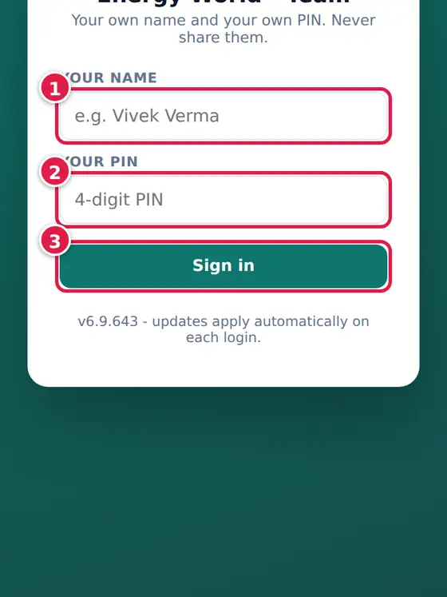
Tap Sign in. The phone remembers you - next time it opens straight on your work.
Your PIN is yours. Nobody else types it and nobody should ever ask you for it. Forgot it? Ask the owner - he sets a new one on Team PINs.
The top of every screen
Your name and your role are at the top. ↻ Refresh pulls the latest book from the office. Account shows who is signed in, Face ID / fingerprint and Sign out.
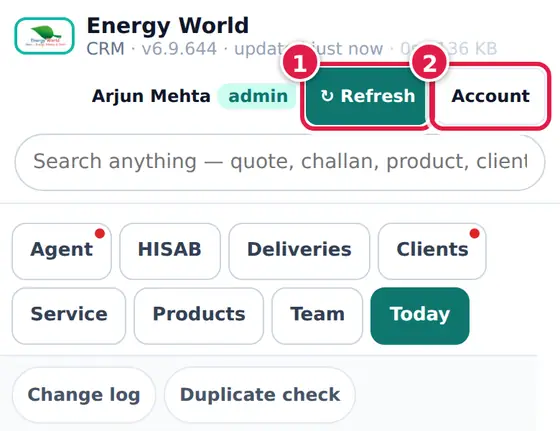
The search box finds anything - a client, a quote number, a challan, a product, a plumber. Type three letters.
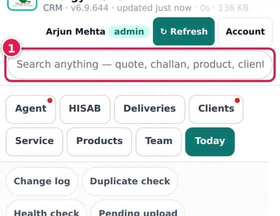
The menu: eight headings, each opens its screens
The first row is the headings: Agent, HISAB, Deliveries, Clients, Service, Products, Team, Today. Tap one.
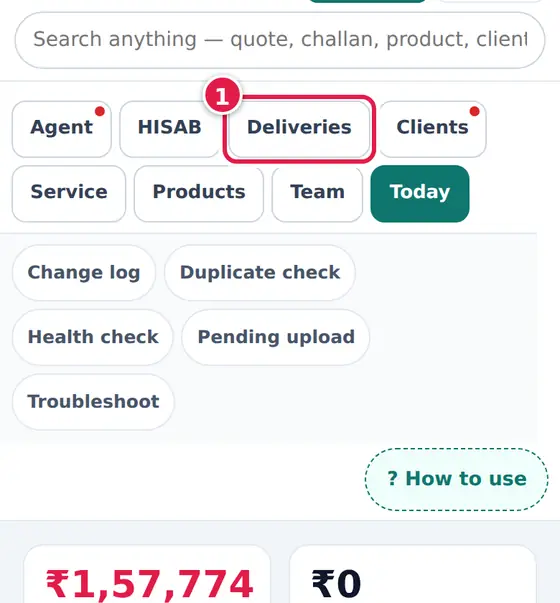
The row under it shows that heading's screens. The dark one is where you are. Tap another to move.
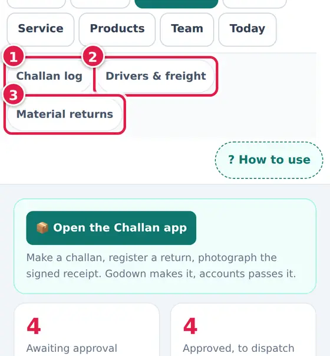
Every screen has a ? How to use button under the menu. It opens this guide at that screen's own section.
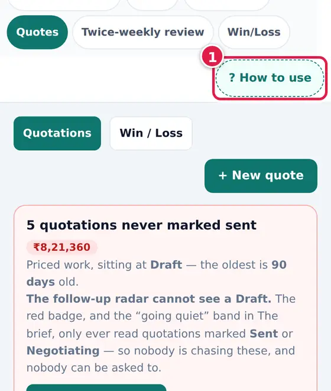
You only see the headings and screens your role needs. If a screen in this guide is missing on your phone, it belongs to another role - that is on purpose.
Who: Everyone. Each person sees the work on his own book.
The Agent reads the whole book every time and ranks what to do today: sites where a brand's window is closing, money to collect, quotes waiting. It never sends anything by itself.
Work down today's list
Open Agent. The four boxes count Do today, This week, Keep an eye on and Snoozed / done. Start with Do today.
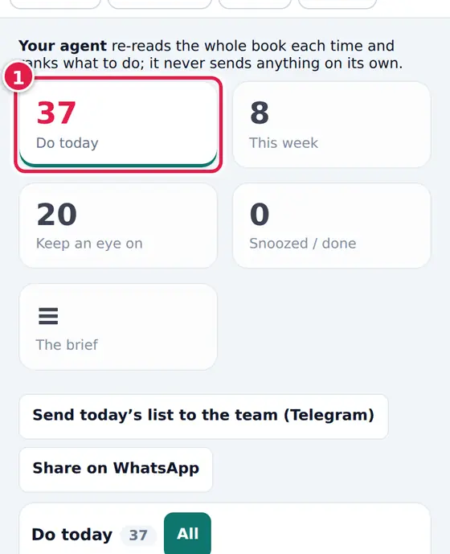
The chips under it narrow the list: windows closing, money to collect, key stage, quotes waiting.
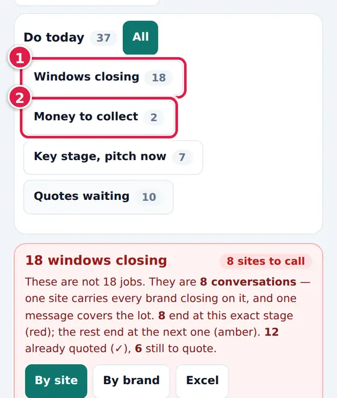
One card is one site. It lists every brand whose window is closing there - ✓ means already quoted. Call client and Call plumber dial straight from the card.
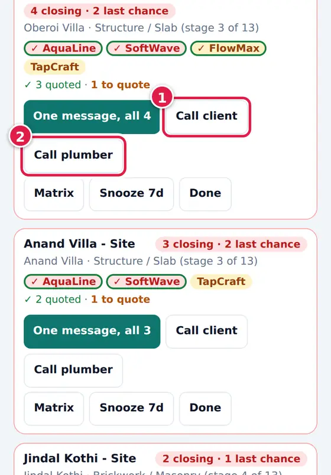
One message, all 4 writes one WhatsApp message for the whole site. Snooze 7d hides the card for a week. Done clears it.
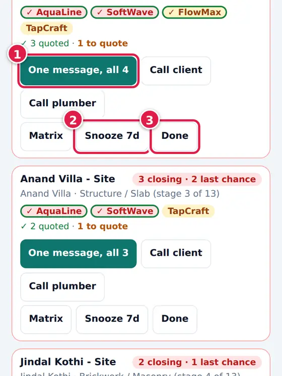
Owner: send the list to the team
Send today’s list to the team (Telegram) posts the list to the team group. Remind executives sends each executive his own sites.
Every new person starts here as a lead. He becomes a client by himself the day he wins a brand or takes a delivery - nobody sets that by hand.
Add a new lead
Open Clients → Leads and tap + New lead.
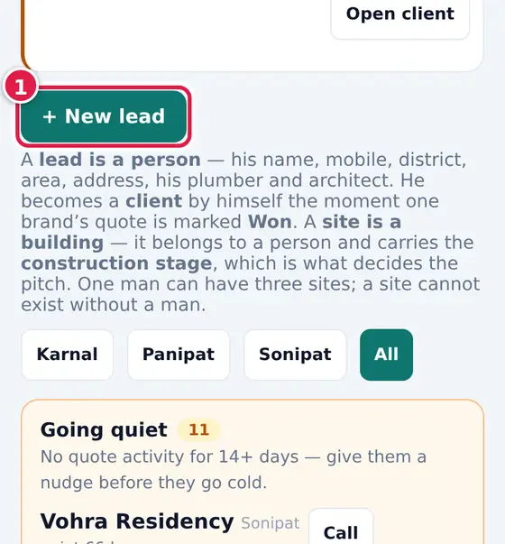
Fill Client name, District and Area / colony (both needed), Mobile, and the Architect and Plumber on his site. The partners you name here earn on every quote and challan later.
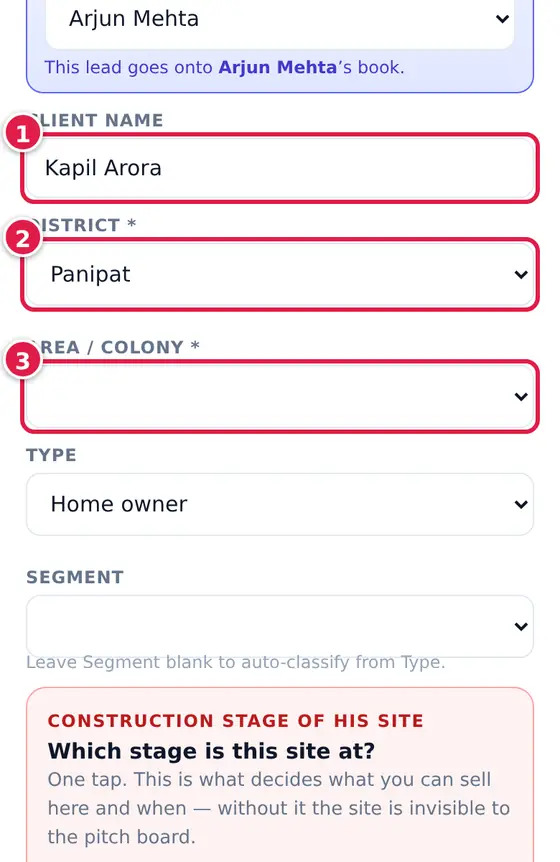
Tap the construction stage of his site - one tap. The stage decides what to pitch there and when. Don't know? Tap Don’t know yet.
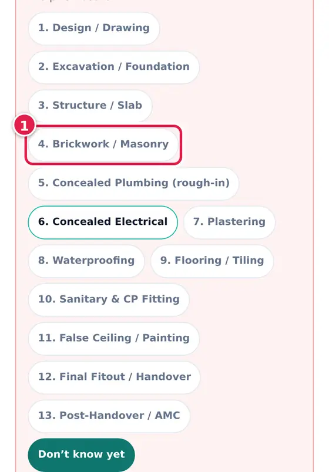
Tap Save client without stage or, after picking a stage, the save button at the bottom. The lead is on your book at once.
Only the owner may set an opening balance, a credit limit or move a lead to another executive. Those boxes stay locked for everyone else.
See who you have quoted
The Leads screen lists everyone you have quoted, oldest quote first - that is the one going cold. The chips filter Waiting to close, Won and Lost.
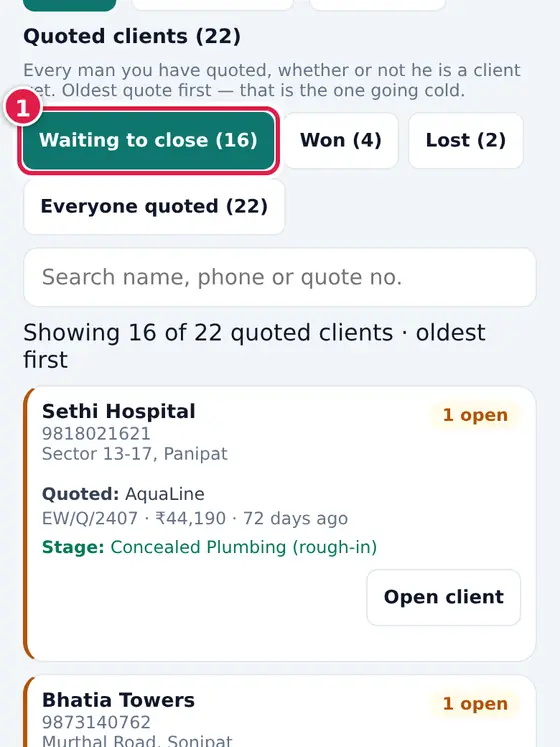
Open client opens his full page: sites, quotes, challans, payments and his HISAB.
Every live site sits under its construction stage, 1 to 13. The board says what to pitch at that stage, to whom, and which windows close soon. Keep the stage right and the whole app follows.
Add a site
Tap + New site.
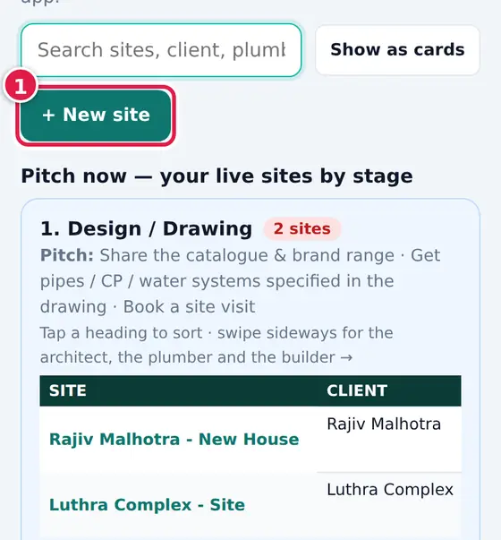
Give the site a name, pick the Client (he must already be on the book), set the Current construction stage, the architect and the plumber. Tap Save.
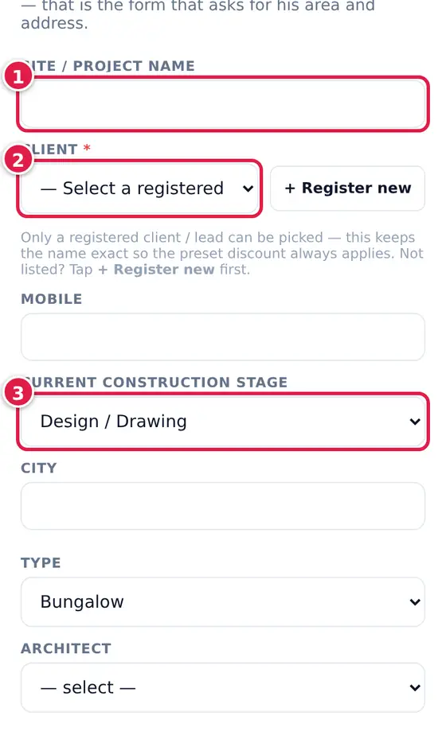
Read the board
Each stage shows its sites and a Pitch line - what to offer at that stage. Tap Pitch on a site to open its brand matrix.
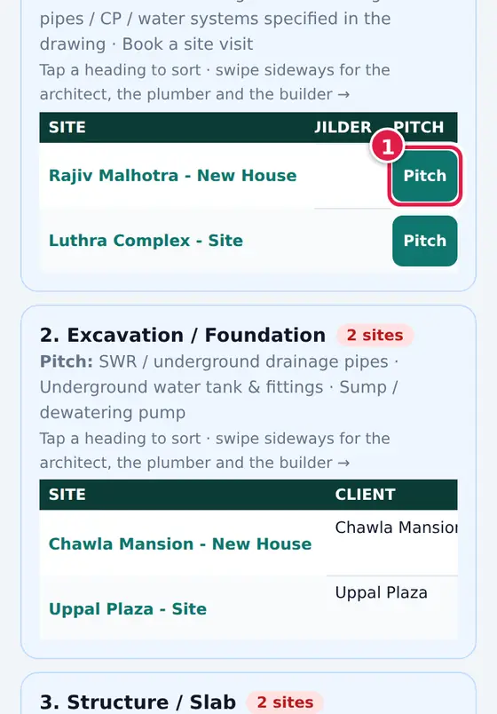
Tap a site name to open it and move its stage when the building moves on.
A quote is built in five steps: Client, Brand, Products, Discount, Review. The discount already agreed for that client and brand fills itself in.
Make a new quote
Tap + New quote.
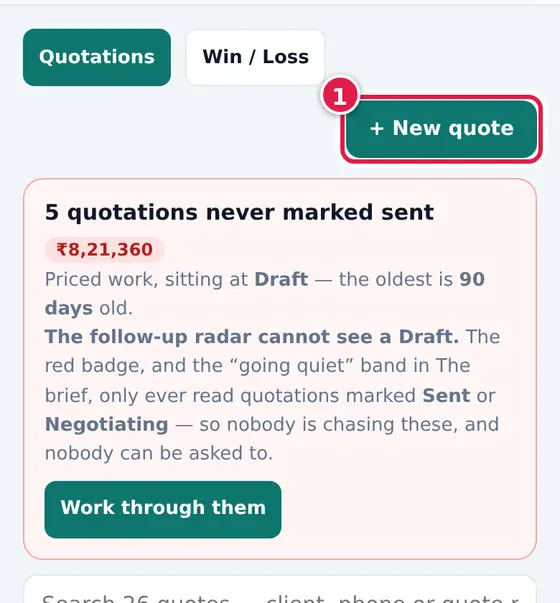
1. Client - tap the district, type the first letters of his name, tap Continue. Check the site stage shown, then Continue to the products.
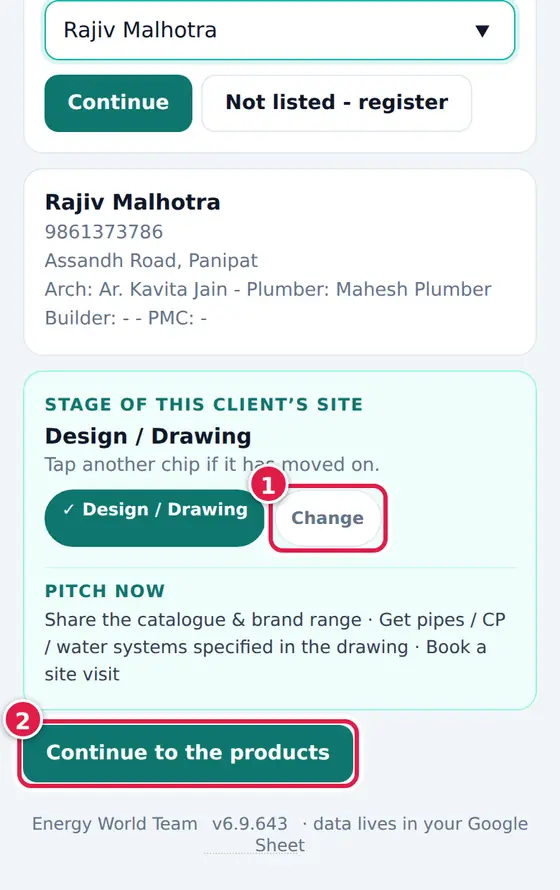
2. Brand - tap the brand. The % beside it is the discount already set for this client.
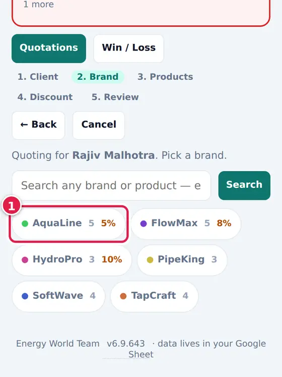
3. Products - tap a category, then + to add quantity. Add another brand on the same quote the same way. + Bathroom files the next items under a room (optional).
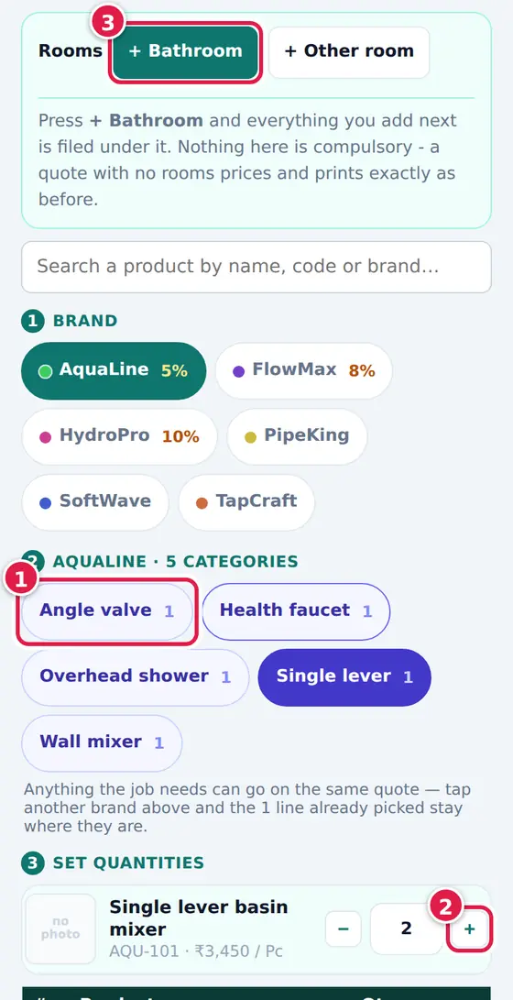
4. Discount - each brand has one box. Type the % and tap Apply brand discounts. ▼ Change discount product-wise sets it line by line.
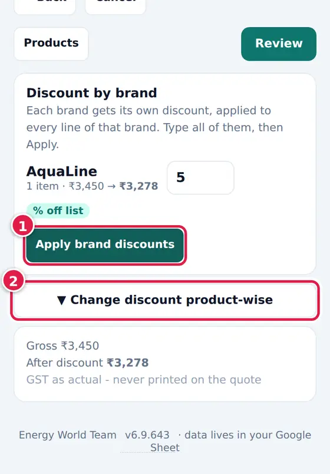
5. Review - check every line and the total. Tick Show 18% GST on the quote PDF if he wants GST printed. Tap Save quote.
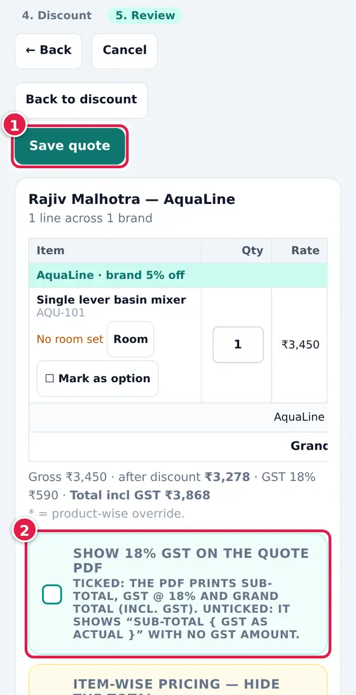
The Margin box on the review is the owner's eyes only - it never prints and never shows to an executive.
By client (the list's usual view) puts every quote under the client's name. A quote that was revised shows Revision 1, Revision 2, Revision 3, the newest marked latest. List shows the plain sheet, sortable by any heading.
Send it, then close it
In the list, PDF makes the quotation to send on WhatsApp. A quote left on Draft has not reached the customer - send it, and it moves to Sent.
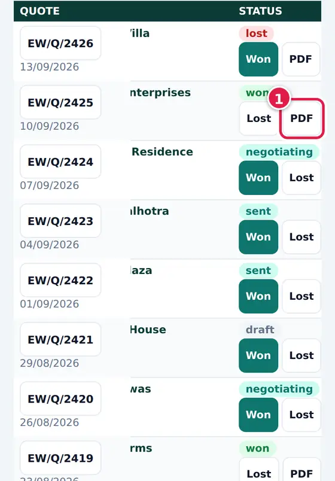
When he decides, tap Won or Lost. Every quote should end one way or the other - an open quote is chased by the Follow-ups radar until it does.
Pick a brand and see every lead who has not taken it yet. A name stays here until that brand is Won, Lost or Not required.
Chase one brand
Lead follow-up is people who have not bought anything yet; Client follow-up is buyers you can sell one more brand to. Tap a brand chip - the number is how many are still open.
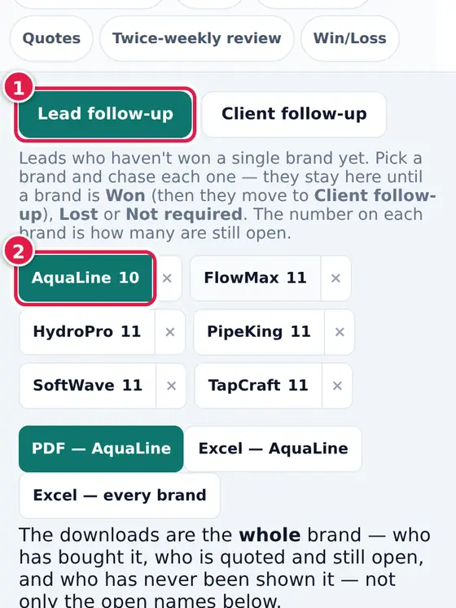
On each name: Quote starts a quote for that brand, Won or Not required closes it.
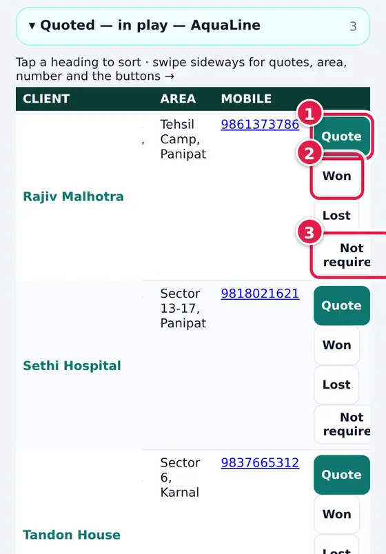
PDF — AquaLine and Excel — every brand download the lists (the button carries the brand you picked).
A visit is logged from the site itself - the phone's GPS proves where you were.
Log a visit
Stand at the site and tap Register visit (uses your GPS). Allow location when the phone asks.
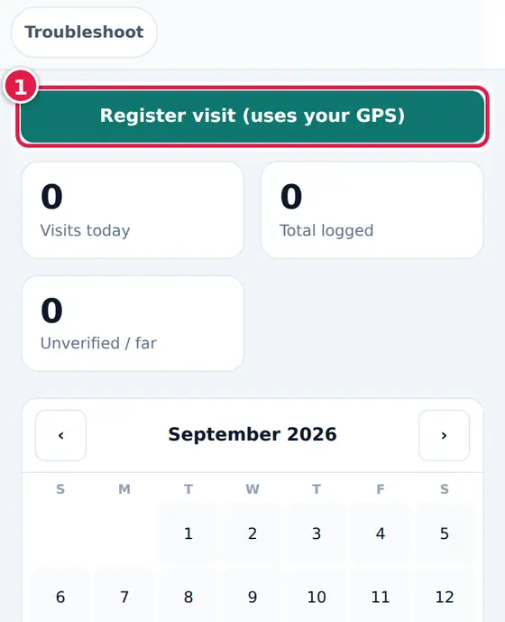
Pick the site or person you met, say who (site, plumber, architect) and why, add a photo if useful, and save. The calendar below shows every visit by day.
On the road, the EW Visit app does the same job in fewer taps.
Where: Clients → Twice-weekly review (also under HISAB)
Who: The owner, accounts and sales executives.
Every Monday and Thursday: what is owed, how old it is, what went out, what came in, and which quotes are waiting - for everyone or for one executive.
Read and send it
Pick the period (Since last review, Last 7 days ...) and Everyone or one executive.
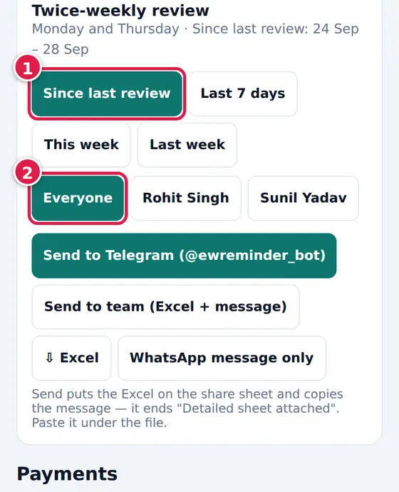
Send to Telegram (@ewreminder_bot) sends the coloured table pictures and the Excel to the reminders group. ⇩ Excel just downloads it.
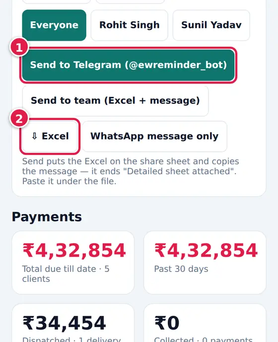
The review, the scorecards and the pitch reminder also send by themselves on their days, from the first phone of the owner or accounts that opens the CRM.
The discount each client gets on each brand. It fills in by itself on every new quote, challan and bill. A change counts from the next challan - old ones keep their rate.
Set a client's discounts
Type the client's name in the box at the top, or tap Edit beside a client below. Type the % for each brand and save.
Who: Godown makes it, accounts (or the owner) passes it, the driver brings back the signed paper. Sales executives can see their clients' challans.
A challan moves through the same steps every time. The screen shows how many are waiting at each step.
The life of a challan
Made (godown) → Passed with a PIN (accounts / owner) → Dispatched (left the godown) → Received (signed paper back) → Finalised into the client's HISAB → Billed.
The counters at the top show how many wait at each step. Tap one to see just those.
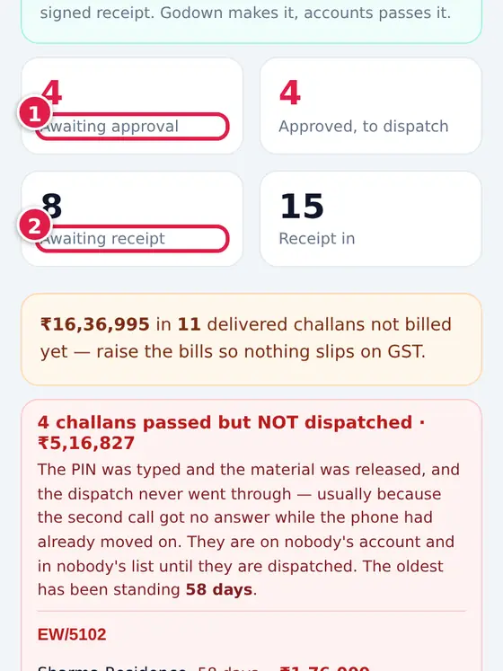
Make a challan (usually done in the Challan app)
Tap + New challan. The godown normally uses the EW Challan app for this - 📦 Open the Challan app opens it.
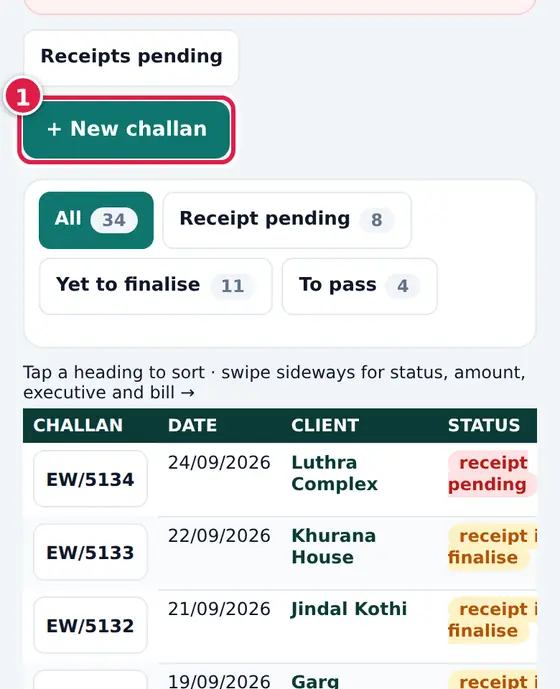
Pick the Client - only a registered client can be picked, so his preset discount always applies. Not there? + Register new.
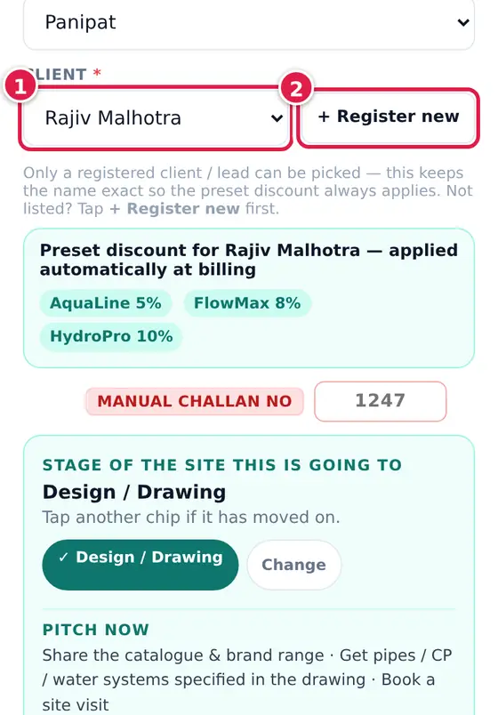
Tap the brand, then the category, then + for the quantity - the same way as a quote.
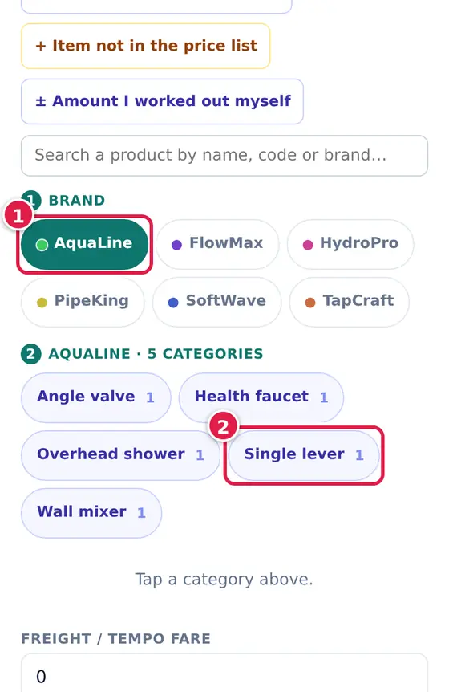
Pick the driver (his mobile and vehicle fill in), the freight, and tap Create challan.
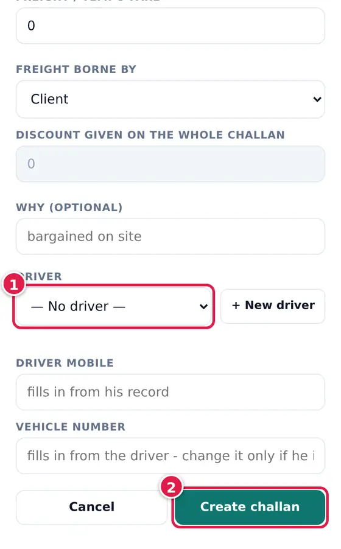
Pass it (accounts / owner)
When challans wait, a red box says so on every screen. Tap Pass them now →.
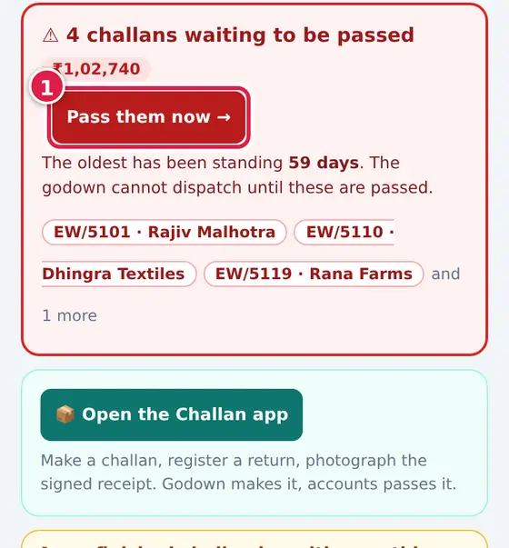
Check the challan and tap Pass & Dispatch.
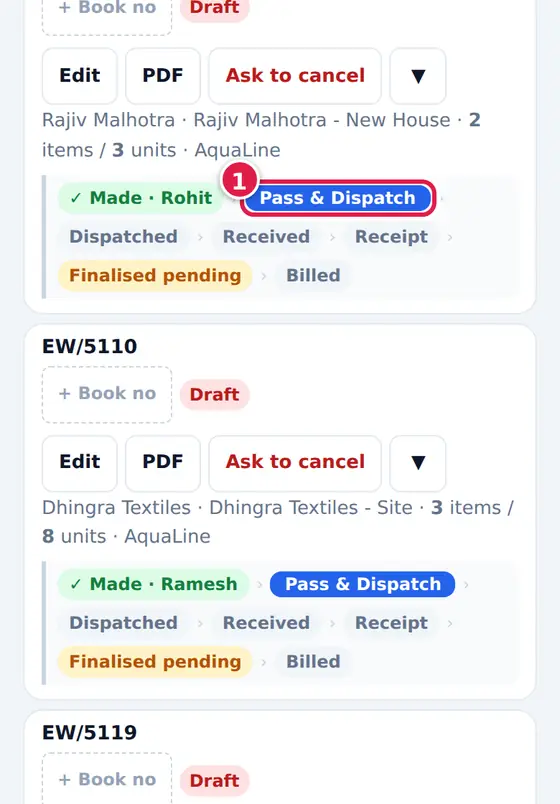
Type your own PIN once and tap Dispatch it. Until you close the app, every next challan is one tap.
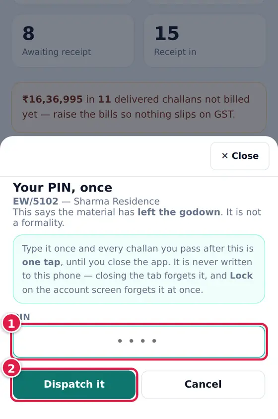
The PIN is the stamp. Never pass a challan on somebody else's PIN, and never give yours.
A mistake? In the EW Challan app, before it leaves the godown, the godown taps Edit or Cancel challan (with a reason) - nothing is deleted, the owner can bring it back. After it has left, the godown taps Ask to cancel; the request waits for the owner here in the CRM and he decides. The godown does not pass challans.
The signed receipt comes back
Open Receipts pending. Each delivery still waiting for its paper is listed, newest day first.
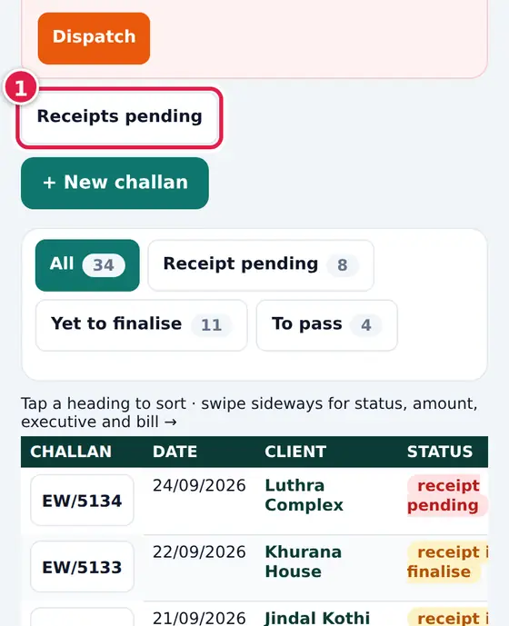
Attach receipt takes a photo of the signed challan. Mark as received says the goods reached the site.
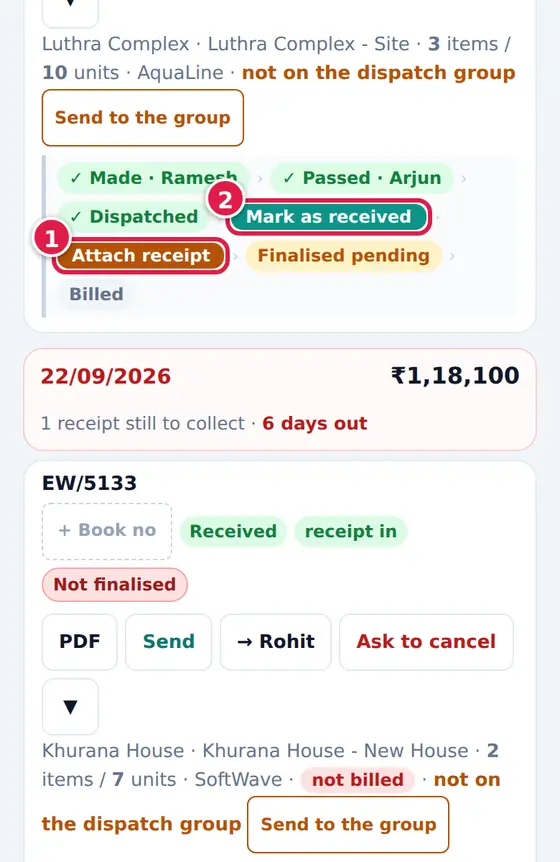
Until the signed paper is in, the delivery is not on the client's account, the driver's trip does not count, and nobody earns on it. Chase the paper.
Where: Deliveries → Challan log (also under HISAB)
Who: The owner, accounts and sales executives.
Every challan on the book in one list, number by number, so a missing number shows. Filter by executive, area, plumber or architect.
Find a delivery
Type a challan number, client or mobile in Find, or use the filters.
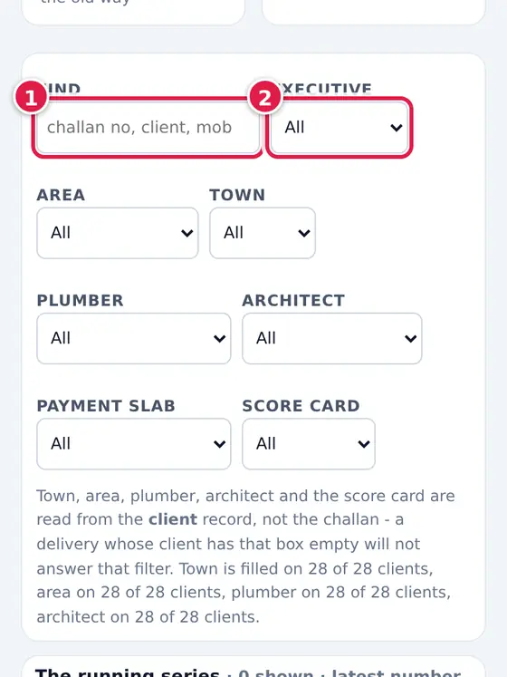
Tap a challan number to open the whole delivery; tap the client to open his HISAB. Attach adds the signed receipt, Finalise puts a received delivery on his account.
Material coming back from a site. The original challan is never changed - a return is its own record, so what went out and what came back can be checked against each other.
Register a return
Tap + Register return.
Pick the Client, the delivery it came from (optional), the Reason, then the items and quantities - or Old delivery — total amount only for an old one. Pick the driver and tap Register return.
As it moves: Picked up when the driver collects it, Received at godown when it is counted in, then Finalise to credit the client.
One client's whole account: every delivery, return, payment and the balance - and from here you finalise deliveries, take payments and download his statement.
Open a client's HISAB
Type the client's name in the box and tap Show - or tap a client in the list below.
His account opens. ⇩ PDF is the statement to send him; ⇩ Excel the same as a sheet.
Finalise a delivery onto his account
A received delivery shows Finalise. Tap it: this puts the amount on his statement and settles any further discount.
The red box deliveries not on any statement yet lists every delivery that is signed for but not finalised - oldest first. Clear it every day.
Take a payment
In his HISAB tap + Payment (or + Advance for money paid ahead).
Who: The owner and accounts. Sales executives see their own clients.
Everyone who owes, oldest money first, and the place to record money as it comes in.
Chase the money
The Collection radar lists who owes, oldest money first. Sort it or filter by age and executive.
Remind sends him a polite WhatsApp with his ledger. → Rohit hands the reminder to his executive.
Record a payment
Tap ₹ In on his line.
Choose Payment received, Advance received or Refund. Type the Amount received, the date, the Mode (Cash, Bank transfer, Cheque, UPI) and the cheque or UTR number. Tap Save payment.
A payment settles his oldest bill first. Paid more than he owes? It is held as credit and comes off his next delivery.
Money paid to a partner or an executive against his incentive. Pick who was paid, the amount and the date. Paying more than is due is allowed - it is an advance and comes off what unlocks next.
Who: The service engineers, accounts and the owner.
Every softener, filter, pump and purifier we have put in, when each is next due, and every visit made to it.
Certify a new install
To certify lists delivered machines that still need commissioning on site. At the site, tap Certify install.
Type the commissioning date, pick the engineer and read the serial number off each machine. Tap Certify & generate - the certificate and warranty card are made.
Log a service visit
Find the client in the list and tap Log visit on his machine.
Pick the Type of visit, the visit charge, salt bags and spares used, and Collected now. Tap Save visit.
Add a machine that was put in before the app
Tap + New installation, pick the customer, the brand and product, dates, warranty, and whether it needs periodic service. Periodic service = Yes is what makes the reminders come.
Who: Everyone can look. Adding a product is for the owner and accounts.
Find a product
Search by code, name, brand or family - or tap a brand, then the category.
Add a product
Tap + Add product. Fill the Product code, List price, Description, family, unit and brand. Tap Save product - it goes into the price list the whole firm quotes from.
What is on hand: the physical count, plus purchase bills from Tally, plus adjustments, less challans dispatched, plus returns booked in. Free is on hand less challans made but not yet dispatched.
The everyday jobs
↑ Upload Tally bills / register brings in the purchase bills. Physical count is for counting the godown. Adjustment adds or takes off stock (a minus number for damage or loss).
Stock to order lists every product at or below its reorder point, with how much to order.
Matches the price list's brand column to your brands, and moves a set of products to another brand. Quotes, the pitch board and incentives all depend on it - change it with care.
Each executive's score out of 100 for the month: sales booked, collections, overdue control, new clients, service. Green is on track, amber watch, red act now.
Read it
Pick Executives, Partners, Activity or Client health, and the month. Tap an executive's name for his card.
Owner: ⚙ Set targets sets each executive's targets for the month.
Who: The owner only. Nobody else sees this screen or its figures.
What each partner and executive has earned. It is worked out from the net sale after discount, becomes payable only as the client pays, counts only once the signed receipt is in, and a booked-in return takes it back.
The owner sets every PIN here - nobody changes his own. Set PIN sets a new number (tell him on the phone). Use last 4 of mobile is a starting PIN for a new joiner. Block sign-in locks a person out - use it the day someone leaves. The role is also changed here.
Where: Today → Today (the screen the app opens on)
Who: Everyone. Each role sees its own boxes.
The numbers that need you today: money outstanding, windows closing, challans to pass, receipts awaited, quotes live, service overdue. Tap a box to open the list behind it.
Use it
Read the boxes top to bottom. Each one opens its list.
Never sent lists quotes still on Draft. Work through them opens each one so you can send it.
Work saved on this phone that has not reached the office yet. With no signal, save anyway - it goes up by itself when the line is back. All work is uploaded means nothing is waiting. Check now tries at once.
A computer or phone that keeps failing to upload: on it, tap Save a copy → Copy. On a device that uploads fine, open the same screen, tap Paste a saved copy, paste, and tap Add and upload. Nothing is deleted on either device.
Something behaving oddly? Type what is wrong in your own words and tap Ask, or tap Just check the app. It tests the app on this phone and says which part is at fault.
A scan for things that quietly cause trouble - missing areas, missing names - so they show here and not from a customer. Test this connection checks whether this line can send big files like receipt photos.
Our own tools lent to plumbers and sites - pipe threading machine, pressure pump, core drill. Every handover is a scan, so there is always a last named holder.
Lend a tool
Scan a tool reads the QR sticker. Or tap Issue beside the tool, pick who takes it and the site, and save. When it comes back, book it into the godown.
A brand's price rise from a date. A challan made on or after that date bills at the new rate; older challans keep theirs for ever. Tap + New price revision.
For each brand line: Pitch by is the last stage the sale can still be made, Supply at is when material goes to site. Correct these and the whole app follows.